Pacing response#
using ModelingToolkit
using OrdinaryDiffEq, SteadyStateDiffEq, DiffEqCallbacks
using Plots
using CSV
using DataFrames
using CaMKIIModel
using CaMKIIModel: second
Plots.default(lw=1.5)
Setup the ODE system#
Electrical stimulation starts at t=100 seconds and ends at t=300 seconds.
sys = build_neonatal_ecc_sys(simplify=true, reduce_iso=true, reduce_camk=true)
tend = 500.0second
prob = ODEProblem(sys, [], tend)
stimstart = 100.0second
stimend = 300.0second
@unpack Istim = sys
alg = KenCarp47()
KenCarp47(; linsolve = nothing, nlsolve = OrdinaryDiffEqNonlinearSolve.NLNewton{Rational{Int64}, Rational{Int64}, Rational{Int64}, Rational{Int64}}(1//100, 10, 1//5, 1//5, false, true, 0//1), precs = DEFAULT_PRECS, smooth_est = true, extrapolant = linear, controller = PI, autodiff = ADTypes.AutoForwardDiff(),)
Single pulse#
callback = build_stim_callbacks(Istim, stimstart + 1second; period=10second, starttime=stimstart)
@time sol = solve(prob, alg; callback)
8.757032 seconds (23.36 M allocations: 1.073 GiB, 4.91% gc time, 99.45% compilation time)
retcode: Success
Interpolation: 3rd order Hermite
t: 132-element Vector{Float64}:
0.0
0.019333123284849308
0.09098129546757994
0.20735582943983855
0.45611910276862533
1.0472562928406122
2.0342667657223696
3.451776641148454
6.733792423912806
12.450117081023194
⋮
230382.17301929306
250334.23713307502
276733.091042313
305589.8673114139
343648.59083174216
381707.3143520704
426137.67107672844
478963.9250696174
500000.0
u: 132-element Vector{Vector{Float64}}:
[0.0026, 830.0, 830.0, 0.00702, 0.966, 0.22156, 0.09243, 0.00188, 0.00977, 0.26081 … 0.12113, 0.12113, 0.12113, 0.12113, 0.12113, 0.12113, 0.12113, -68.79268, 13838.37602, 150952.75035000002]
[0.0025985659590295374, 829.9994975880693, 829.9999654017583, 0.007020208561323646, 0.9660018276402699, 0.2215639938807744, 0.09242766669618695, 0.001879826176081169, 0.009769882842069916, 0.2608055799112056 … 0.12113000000000405, 0.12113000000038378, 0.12113000001389383, 0.12113000037367234, 0.12113000811850358, 0.1211301421535992, 0.1211319185255175, -68.79732946186226, 13838.375711519551, 150952.7504077194]
[0.002593310524681686, 829.9976422525165, 829.9998348635061, 0.00702008986027517, 0.9660085993318799, 0.2215787945110049, 0.09241901973901424, 0.0018789042446514422, 0.009769459049732313, 0.26078941009382306 … 0.12113000089551408, 0.12113000693481112, 0.12113004704056851, 0.12113027926811751, 0.12113143375871603, 0.12113624253259858, 0.12115248970210647, -68.81607005265552, 13838.374513299192, 150952.75062244057]
[0.0025849478335103777, 829.9946506157202, 829.9996133960318, 0.007017234889558555, 0.9660195931792828, 0.22160283236040595, 0.09240497563401104, 0.0018766436937193197, 0.009768805322556195, 0.2607638707001999 … 0.12113010483012125, 0.12113038966346881, 0.12113131833063846, 0.12113403405679994, 0.12114109135582983, 0.12115723910142133, 0.12118951551963694, -68.84681913285226, 13838.372555328333, 150952.7509740238]
[0.00256770780104998, 829.9883445519497, 829.9990964774663, 0.0070030143052343926, 0.9660430731013478, 0.2216542075240971, 0.0923749578279845, 0.0018699196262940564, 0.00976754294689657, 0.2607122383588733 … 0.12113292110288297, 0.12113633873395534, 0.12114295934422185, 0.1211549441109046, 0.12117519662647316, 0.12120713813483533, 0.12125418995384044, -68.91207316777846, 13838.368384399068, 150952.7517373371]
[0.0025298083713907005, 829.9738229154025, 829.9976227528975, 0.006946470397388757, 0.9660987611411453, 0.22177624785138977, 0.09230364339951613, 0.0018505337694469416, 0.009765228548607825, 0.26060507831375035 … 0.12115849269665876, 0.12117335985880447, 0.12119414515426223, 0.12122229800810431, 0.12125925929399749, 0.12130632552358435, 0.12136450208851982, -69.06429960994137, 13838.358559292059, 150952.75361533565]
[0.0024748079782158957, 829.9509077855928, 829.9944193668179, 0.0068337541728754475, 0.9661914345949096, 0.2219798989175973, 0.09218462776986637, 0.0018178174419014681, 0.009763403076884485, 0.26047114911179464 … 0.121224541218447, 0.12125242557826559, 0.12128628091507473, 0.12132672249013034, 0.12137426379919634, 0.12142927821043341, 0.12149196513254243, -69.31024285744343, 13838.34240329337, 150952.75694915713]
[0.0024106893964811315, 829.9205247545176, 829.9883533251192, 0.006675512062656749, 0.9663239343003682, 0.22227216398019892, 0.09201383579531924, 0.0017738156907532244, 0.009765046552800477, 0.2603648729749554 … 0.12132150441596071, 0.1213585548820791, 0.12140052118634265, 0.12144759471003594, 0.12149988983034501, 0.12155743299711903, 0.1216201542687696, -69.64637448767432, 13838.319723120678, 150952.76215620188]
[0.002310655727734336, 829.8589858006806, 829.9689941817725, 0.006355039713677859, 0.9666286957812559, 0.22294828828976576, 0.09161908329520764, 0.0016855899094922325, 0.009786689200123853, 0.26041507667541997 … 0.12150439833798567, 0.12154722283384199, 0.12159304920072046, 0.1216418099553358, 0.12169340184085989, 0.12174768443532383, 0.12180447948880607, -70.35063788657428, 13838.2694938995, 150952.77598869594]
[0.0022289950402245105, 829.7704141396295, 829.923524981244, 0.005926150085676071, 0.9671554512230358, 0.22412560303273427, 0.09093422465365385, 0.0015688568862426045, 0.009873892913308327, 0.26104417804603025 … 0.12171274673876376, 0.12175152667167376, 0.12179171693004416, 0.12183318573340746, 0.12187579038290353, 0.12191937753328339, 0.12196378364408178, -71.35304509818071, 13838.18882346682, 150952.80529264064]
⋮
[0.0013110576798804289, 770.6180154776503, 770.8455791769616, 0.006998369189332359, 0.999645204054745, 0.9996467050754488, 0.0018953687249872947, 0.0027285194411764235, 0.0017627343161957267, 0.0014250424728004894 … 0.12767481625658694, 0.12767465076370998, 0.12767448645730947, 0.12767432328006006, 0.1276741611769076, 0.12767400009495797, 0.12767383998337217, -68.85100772300628, 12814.832271151985, 151980.49049877533]
[0.001274135756932512, 769.5393812804259, 769.760277622308, 0.007050663310115657, 0.9996367239259906, 0.9996381496535246, 0.0019253095559596308, 0.0027507931017542874, 0.0017771285188829412, 0.0014494174099060311 … 0.12716793482955432, 0.1271677832399774, 0.12716763277632573, 0.12716748338531147, 0.12716733501575803, 0.12716718761849627, 0.12716704114626787, -68.7414507958206, 12765.46607466945, 152030.00926901313]
[0.0012316602923595284, 768.238779679221, 768.4520199712275, 0.007114578477468106, 0.9996261714628878, 0.9996274986061285, 0.0019622255248243556, 0.0027780352530743114, 0.001794734026764465, 0.0014795263622695862 … 0.12657643771877966, 0.12657630297071093, 0.126576169262902, 0.12657603654720173, 0.12657590477736658, 0.1265757739089672, 0.12657564389930034, -68.6086398190948, 12706.563528573815, 152089.0937575526]
[0.0011922389347489412, 766.9706468814563, 767.1767958345083, 0.0071779757625086565, 0.9996154981108091, 0.9996167186397047, 0.00199919232348024, 0.002805076570941355, 0.001812209693168888, 0.0015097500285990216 … 0.12601893900859998, 0.1260188207364304, 0.12601870340946297, 0.12601858698479457, 0.12601847142122113, 0.1260183566791554, 0.12601824272054768, -68.47806782962465, 12649.645208385595, 152146.18751733072]
[0.0011493595528545674, 765.5195840391788, 765.718036217444, 0.007252082570833455, 0.9996027585137324, 0.999603844485074, 0.002042844493651827, 0.0028367112581268884, 0.001832654587230007, 0.0015455004127797824 … 0.12540256689662424, 0.12540246749697717, 0.1254023689204672, 0.12540227113046584, 0.1254021740917956, 0.12540207777065907, 0.1254019821345717, -68.326885528575, 12584.953361675114, 152211.0779363844]
[0.0011147547558344269, 764.290272098913, 764.4825260440857, 0.007316404551493167, 0.9995914682824298, 0.9995924290998899, 0.002081118081552628, 0.002864190564854195, 0.0018504140461611622, 0.0015769136555395555 … 0.12489704418984142, 0.12489696077985298, 0.12489687808047738, 0.12489679606058263, 0.12489671469026987, 0.12489663394081331, 0.12489655378460286, -68.19690258861432, 12530.354810238247, 152265.84305815876]
[0.0010825026956345625, 763.094336534302, 763.2808250120031, 0.007380555571979056, 0.9995799901636235, 0.9995808149695197, 0.002119646890240647, 0.00289161624263795, 0.0018681390183740985, 0.0016086226484642644 … 0.1244189305450866, 0.1244188626144753, 0.1244187952775439, 0.1244187285086395, 0.12441866228312537, 0.12441859657733138, 0.12441853136850664, -68.0683887848432, 12477.2866960706, 152319.07188244813]
[0.0010528655988170383, 761.9501843363861, 762.1313846881503, 0.007443612950324526, 0.9995684937879387, 0.9995691728563009, 0.002157865595642303, 0.0029185935277739592, 0.0018855746688310271, 0.00164015101143272 … 0.12397330787595594, 0.12397325465981422, 0.12397320191909242, 0.12397314963348907, 0.12397309778350689, 0.12397304635041342, 0.12397299531620389, -67.9431399389826, 12426.428119564407, 152370.08307445512]
[0.0010431528708337197, 761.5653135980143, 761.7447831932616, 0.007465246013898327, 0.9995644996549445, 0.99956513687125, 0.00217106068503509, 0.002927853454608084, 0.0018915560796125908, 0.0016509231051425155 … 0.12382591213171965, 0.12382586376452855, 0.12382581582969013, 0.12382576830875199, 0.12382572118399306, 0.12382567443838774, 0.12382562805557226, -67.90041510362798, 12409.27492545669, 152387.28737046637]
plot(sol, idxs=(sys.t / 1000 - 100, sys.vm), title="Action potential (single pulse)", ylabel="mV", xlabel="Time (s)", label=false, tspan=(100second, 103second))
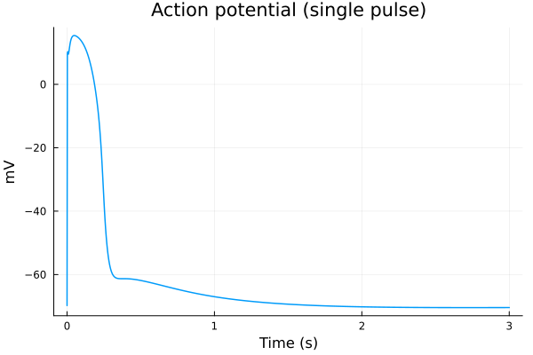
plot(sol, idxs=(sys.t / 1000 - 100, sys.Cai_mean), tspan=(100second, 103second), title="Calcium transient", ylabel="Conc. (μM)", xlabel="Time (s)", label="Avg Ca (Model)")
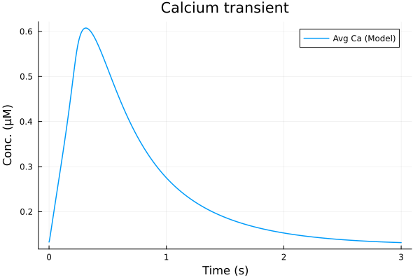
savefig("single-cat.pdf")
"/home/github/actions-runner-1/_work/camkii-cardiomyocyte-model/camkii-cardiomyocyte-model/.cache/docs/single-cat.pdf"
1Hz#
callback = build_stim_callbacks(Istim, stimend; period=1second, starttime=stimstart)
@time sol = solve(prob, alg; callback)
2.681453 seconds (78.83 k allocations: 18.272 MiB)
retcode: Success
Interpolation: 3rd order Hermite
t: 8928-element Vector{Float64}:
0.0
0.019333123284849308
0.09098129546757994
0.20735582943983855
0.45611910276862533
1.0472562928406122
2.0342667657223696
3.451776641148454
6.733792423912806
12.450117081023194
⋮
397420.7293508087
407496.2619864756
419304.0528694844
431111.8437524932
444428.3784047912
459536.4436840207
475039.8195722815
494235.3907788104
500000.0
u: 8928-element Vector{Vector{Float64}}:
[0.0026, 830.0, 830.0, 0.00702, 0.966, 0.22156, 0.09243, 0.00188, 0.00977, 0.26081 … 0.12113, 0.12113, 0.12113, 0.12113, 0.12113, 0.12113, 0.12113, -68.79268, 13838.37602, 150952.75035000002]
[0.0025985659590295374, 829.9994975880693, 829.9999654017583, 0.007020208561323646, 0.9660018276402699, 0.2215639938807744, 0.09242766669618695, 0.001879826176081169, 0.009769882842069916, 0.2608055799112056 … 0.12113000000000405, 0.12113000000038378, 0.12113000001389383, 0.12113000037367234, 0.12113000811850358, 0.1211301421535992, 0.1211319185255175, -68.79732946186226, 13838.375711519551, 150952.7504077194]
[0.002593310524681686, 829.9976422525165, 829.9998348635061, 0.00702008986027517, 0.9660085993318799, 0.2215787945110049, 0.09241901973901424, 0.0018789042446514422, 0.009769459049732313, 0.26078941009382306 … 0.12113000089551408, 0.12113000693481112, 0.12113004704056851, 0.12113027926811751, 0.12113143375871603, 0.12113624253259858, 0.12115248970210647, -68.81607005265552, 13838.374513299192, 150952.75062244057]
[0.0025849478335103777, 829.9946506157202, 829.9996133960318, 0.007017234889558555, 0.9660195931792828, 0.22160283236040595, 0.09240497563401104, 0.0018766436937193197, 0.009768805322556195, 0.2607638707001999 … 0.12113010483012125, 0.12113038966346881, 0.12113131833063846, 0.12113403405679994, 0.12114109135582983, 0.12115723910142133, 0.12118951551963694, -68.84681913285226, 13838.372555328333, 150952.7509740238]
[0.00256770780104998, 829.9883445519497, 829.9990964774663, 0.0070030143052343926, 0.9660430731013478, 0.2216542075240971, 0.0923749578279845, 0.0018699196262940564, 0.00976754294689657, 0.2607122383588733 … 0.12113292110288297, 0.12113633873395534, 0.12114295934422185, 0.1211549441109046, 0.12117519662647316, 0.12120713813483533, 0.12125418995384044, -68.91207316777846, 13838.368384399068, 150952.7517373371]
[0.0025298083713907005, 829.9738229154025, 829.9976227528975, 0.006946470397388757, 0.9660987611411453, 0.22177624785138977, 0.09230364339951613, 0.0018505337694469416, 0.009765228548607825, 0.26060507831375035 … 0.12115849269665876, 0.12117335985880447, 0.12119414515426223, 0.12122229800810431, 0.12125925929399749, 0.12130632552358435, 0.12136450208851982, -69.06429960994137, 13838.358559292059, 150952.75361533565]
[0.0024748079782158957, 829.9509077855928, 829.9944193668179, 0.0068337541728754475, 0.9661914345949096, 0.2219798989175973, 0.09218462776986637, 0.0018178174419014681, 0.009763403076884485, 0.26047114911179464 … 0.121224541218447, 0.12125242557826559, 0.12128628091507473, 0.12132672249013034, 0.12137426379919634, 0.12142927821043341, 0.12149196513254243, -69.31024285744343, 13838.34240329337, 150952.75694915713]
[0.0024106893964811315, 829.9205247545176, 829.9883533251192, 0.006675512062656749, 0.9663239343003682, 0.22227216398019892, 0.09201383579531924, 0.0017738156907532244, 0.009765046552800477, 0.2603648729749554 … 0.12132150441596071, 0.1213585548820791, 0.12140052118634265, 0.12144759471003594, 0.12149988983034501, 0.12155743299711903, 0.1216201542687696, -69.64637448767432, 13838.319723120678, 150952.76215620188]
[0.002310655727734336, 829.8589858006806, 829.9689941817725, 0.006355039713677859, 0.9666286957812559, 0.22294828828976576, 0.09161908329520764, 0.0016855899094922325, 0.009786689200123853, 0.26041507667541997 … 0.12150439833798567, 0.12154722283384199, 0.12159304920072046, 0.1216418099553358, 0.12169340184085989, 0.12174768443532383, 0.12180447948880607, -70.35063788657428, 13838.2694938995, 150952.77598869594]
[0.0022289950402245105, 829.7704141396295, 829.923524981244, 0.005926150085676071, 0.9671554512230358, 0.22412560303273427, 0.09093422465365385, 0.0015688568862426045, 0.009873892913308327, 0.26104417804603025 … 0.12171274673876376, 0.12175152667167376, 0.12179171693004416, 0.12183318573340746, 0.12187579038290353, 0.12191937753328339, 0.12196378364408178, -71.35304509818071, 13838.18882346682, 150952.80529264064]
⋮
[0.0017175387418237277, 779.9799229341191, 780.2814530655309, 0.006556983221575384, 0.9997114391130608, 0.9997133772334794, 0.0016521050686399972, 0.002541088856024201, 0.00164161513258113, 0.0012285528850312529 … 0.13289281217227464, 0.13289253038253812, 0.1328922498015814, 0.13289197034792935, 0.13289169194333614, 0.13289141451262648, 0.13289113798354718, -69.80948561270884, 13278.089794412663, 151515.81902269443]
[0.0016722746524965226, 779.1254557091959, 779.4187091590069, 0.006597217970036079, 0.9997057866510966, 0.9997076981393552, 0.0016735787025278363, 0.002558130849239118, 0.0016526273431769906, 0.0012457798340357344 … 0.13233958693902886, 0.13233931531847573, 0.132339044951793, 0.13233877575868033, 0.13233850766201982, 0.1323382405877199, 0.1323379744645687, -69.7195008294272, 13232.111502348553, 151561.9342060916]
[0.0016230763240733385, 778.1507291507565, 778.4349956840805, 0.006642946130775098, 0.9996992708969176, 0.9997011459431063, 0.0016981584269494736, 0.002577511055403362, 0.0016651505952987287, 0.0012655289614996715 … 0.13173130056898125, 0.13173104065358104, 0.13173078202927246, 0.13173052461740178, 0.13173026834243182, 0.13173001313178898, 0.1317297589157195, -69.61787562491212, 13180.821155643223, 151613.37827166214]
[0.0015776772056548616, 777.2059766533597, 777.481959890719, 0.006687179197982837, 0.9996928738534641, 0.9996947156488465, 0.001722102909230041, 0.0025962676610782037, 0.0016772709472780763, 0.0012847925838738784 … 0.13116321578770787, 0.13116296738722724, 0.13116272030102824, 0.1311624744523387, 0.13116222976742842, 0.13116198617546007, 0.13116174360834879, -69.52025493251772, 13132.18634857163, 151662.1597807226]
[0.00153061227368952, 776.1777778843448, 776.4451840785509, 0.006735286219292104, 0.9996858116842523, 0.9996876101843761, 0.0017483390578110426, 0.0026166788634113475, 0.0016904606839284232, 0.0013059353333553603 … 0.13056703431607242, 0.13056679857532874, 0.13056656416061177, 0.1305663309975101, 0.13056609901456157, 0.13056586814310858, 0.13056563831716214, -69.41480081459255, 13080.331564596207, 151714.17187739682]
[0.0014820507290652651, 775.0613455883043, 775.3199137734847, 0.006787588903356553, 0.9996780071094087, 0.9996797565978023, 0.0017770923131241762, 0.002638884798087753, 0.0017048103584188974, 0.0013291436146087396 … 0.1299436920108197, 0.12994347014126936, 0.129943249596331, 0.12994303030443913, 0.12994281219686385, 0.12994259520757204, 0.1299423792730964, -69.30099188927697, 13025.159389549264, 151769.51231374263]
[0.0014369811358472245, 773.9711768711256, 774.2215546069385, 0.006838802266503458, 0.9996702372156246, 0.9996719302296269, 0.0018054801341616, 0.002660643386483487, 0.001718871154455908, 0.0013520978330363658 … 0.12935729849170988, 0.1293570902665941, 0.12935688335047701, 0.12935667767488776, 0.12935647317406845, 0.12935626978484147, 0.12935606744648392, -69.19037200428491, 12972.303078706185, 151822.53057122987]
[0.0013870889338929266, 772.6993808014034, 772.940706368333, 0.006898902681073774, 0.9996609568705977, 0.9996625831123114, 0.001839073383801558, 0.002686192853338638, 0.0017353814050314652, 0.0013793074026723809 … 0.1286987930309346, 0.12869860089602525, 0.12869841003616414, 0.12869822038683124, 0.1286980318860627, 0.12869784447432572, 0.12869765809440029, -69.06164930516105, 12911.755414462887, 151883.26445998732]
[0.001373261522596437, 772.3341498100901, 772.5729695511152, 0.006916241631924889, 0.9996582450741128, 0.9996598523053611, 0.0018488280488429102, 0.002693567762134677, 0.0017401474544429208, 0.0013872194629613748 … 0.1285144652572399, 0.12851427778236152, 0.1285140915699349, 0.1285139065566371, 0.12851372268165384, 0.12851353988655645, 0.12851335811518624, -69.0247123389385, 12894.566779686118, 151900.5060763274]
plot(sol, idxs=(sys.t / 1000, sys.vm), title="Action potential", ylabel="mV", xlabel="Time (s)", label=false)
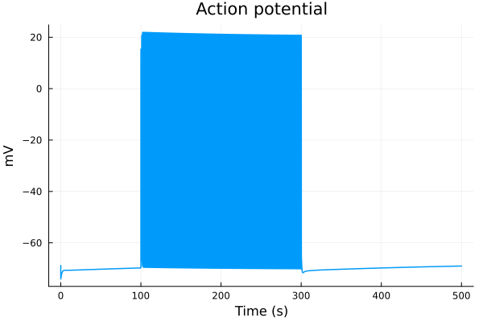
plot(sol, idxs=(sys.t / 1000 - 299, sys.vm), title="Action potential", tspan=(299second, 300second), ylabel="mV", xlabel="Time (s)", label=false)
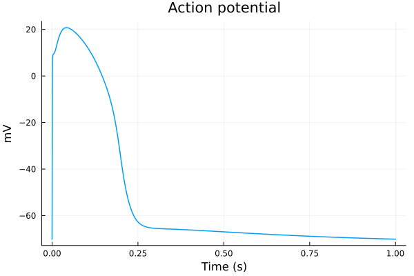
plot(sol, idxs=(sys.t / 1000 - 299, [sys.IK1, sys.Ito, sys.IKs, sys.IKr, sys.If]), tspan=(299second, 300second), ylabel="μA/μF", xlabel="Time (s)", label=["IK1" "Ito" "IKs" "IKr" "If"])
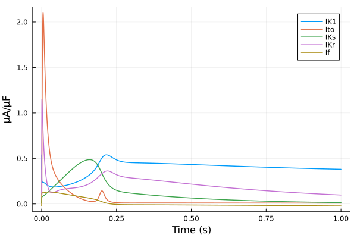
plot(sol, idxs=(sys.t / 1000 - 299, [sys.ICaL, sys.INaCa, sys.ICaT, sys.ICab]), tspan=(299second, 300second), ylabel="μA/μF", xlabel="Time (s)", label=["ICaL" "INaCa" "ICaT" "ICab"])
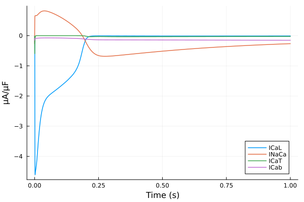
plot(sol, idxs=(sys.t / 1000 - 299, [sys.Cai_sub_SR, sys.Cai_sub_SL, sys.Cai_mean]), tspan=(299second, 300second), title="Calcium transient", ylabel="μM", xlabel="Time (s)", label=["CaSSR" "CaSL" "CaAvg"])
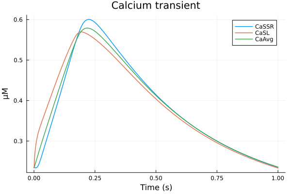
plot(sol, idxs=(sys.t / 1000, sys.CaMKAct * 100), title="Active CaMKII", ylabel="Active CaMKII (%)", xlabel="Time (s)", label=false)
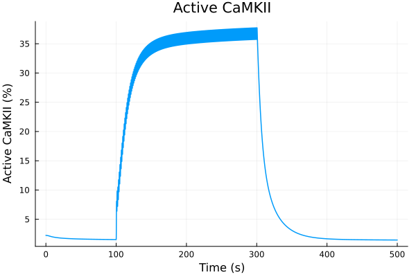
3D surface plot#
xx = 1:44
yy = range(299second, 300second, length=100)
zz = [sol(t, idxs=sys.Cai[u]) for t in yy, u in xx]
surface(xx, yy ./ 1000, zz, colorbar=:none, yguide="sec.", zguide="Conc. (μM)", xticks=false, size=(600, 600))
annotate!(3, 299, 0.65, "SL")
annotate!(41, 299.25, 0.58, "SR")
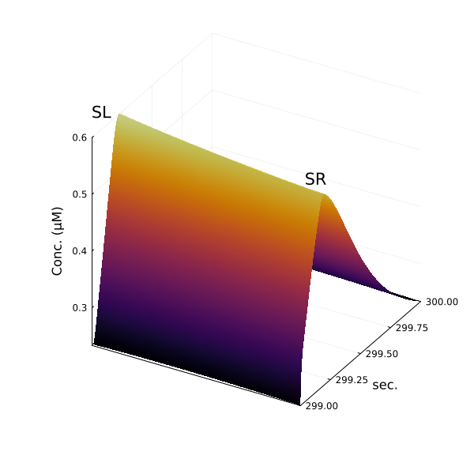
savefig("3d-surface.pdf")
"/home/github/actions-runner-1/_work/camkii-cardiomyocyte-model/camkii-cardiomyocyte-model/.cache/docs/3d-surface.pdf"
2Hz#
callback = build_stim_callbacks(Istim, stimend; period=1 / 2 * second, starttime=stimstart)
@time sol2 = solve(prob, alg; callback)
4.644326 seconds (122.72 k allocations: 29.268 MiB)
retcode: Success
Interpolation: 3rd order Hermite
t: 14163-element Vector{Float64}:
0.0
0.019333123284849308
0.09098129546757994
0.20735582943983855
0.45611910276862533
1.0472562928406122
2.0342667657223696
3.451776641148454
6.733792423912806
12.450117081023194
⋮
403252.8064076104
412782.91906571155
423257.62396415835
435362.5046771487
447467.38539013907
461423.863562818
478496.3270349015
495568.790506985
500000.0
u: 14163-element Vector{Vector{Float64}}:
[0.0026, 830.0, 830.0, 0.00702, 0.966, 0.22156, 0.09243, 0.00188, 0.00977, 0.26081 … 0.12113, 0.12113, 0.12113, 0.12113, 0.12113, 0.12113, 0.12113, -68.79268, 13838.37602, 150952.75035000002]
[0.0025985659590295374, 829.9994975880693, 829.9999654017583, 0.007020208561323646, 0.9660018276402699, 0.2215639938807744, 0.09242766669618695, 0.001879826176081169, 0.009769882842069916, 0.2608055799112056 … 0.12113000000000405, 0.12113000000038378, 0.12113000001389383, 0.12113000037367234, 0.12113000811850358, 0.1211301421535992, 0.1211319185255175, -68.79732946186226, 13838.375711519551, 150952.7504077194]
[0.002593310524681686, 829.9976422525165, 829.9998348635061, 0.00702008986027517, 0.9660085993318799, 0.2215787945110049, 0.09241901973901424, 0.0018789042446514422, 0.009769459049732313, 0.26078941009382306 … 0.12113000089551408, 0.12113000693481112, 0.12113004704056851, 0.12113027926811751, 0.12113143375871603, 0.12113624253259858, 0.12115248970210647, -68.81607005265552, 13838.374513299192, 150952.75062244057]
[0.0025849478335103777, 829.9946506157202, 829.9996133960318, 0.007017234889558555, 0.9660195931792828, 0.22160283236040595, 0.09240497563401104, 0.0018766436937193197, 0.009768805322556195, 0.2607638707001999 … 0.12113010483012125, 0.12113038966346881, 0.12113131833063846, 0.12113403405679994, 0.12114109135582983, 0.12115723910142133, 0.12118951551963694, -68.84681913285226, 13838.372555328333, 150952.7509740238]
[0.00256770780104998, 829.9883445519497, 829.9990964774663, 0.0070030143052343926, 0.9660430731013478, 0.2216542075240971, 0.0923749578279845, 0.0018699196262940564, 0.00976754294689657, 0.2607122383588733 … 0.12113292110288297, 0.12113633873395534, 0.12114295934422185, 0.1211549441109046, 0.12117519662647316, 0.12120713813483533, 0.12125418995384044, -68.91207316777846, 13838.368384399068, 150952.7517373371]
[0.0025298083713907005, 829.9738229154025, 829.9976227528975, 0.006946470397388757, 0.9660987611411453, 0.22177624785138977, 0.09230364339951613, 0.0018505337694469416, 0.009765228548607825, 0.26060507831375035 … 0.12115849269665876, 0.12117335985880447, 0.12119414515426223, 0.12122229800810431, 0.12125925929399749, 0.12130632552358435, 0.12136450208851982, -69.06429960994137, 13838.358559292059, 150952.75361533565]
[0.0024748079782158957, 829.9509077855928, 829.9944193668179, 0.0068337541728754475, 0.9661914345949096, 0.2219798989175973, 0.09218462776986637, 0.0018178174419014681, 0.009763403076884485, 0.26047114911179464 … 0.121224541218447, 0.12125242557826559, 0.12128628091507473, 0.12132672249013034, 0.12137426379919634, 0.12142927821043341, 0.12149196513254243, -69.31024285744343, 13838.34240329337, 150952.75694915713]
[0.0024106893964811315, 829.9205247545176, 829.9883533251192, 0.006675512062656749, 0.9663239343003682, 0.22227216398019892, 0.09201383579531924, 0.0017738156907532244, 0.009765046552800477, 0.2603648729749554 … 0.12132150441596071, 0.1213585548820791, 0.12140052118634265, 0.12144759471003594, 0.12149988983034501, 0.12155743299711903, 0.1216201542687696, -69.64637448767432, 13838.319723120678, 150952.76215620188]
[0.002310655727734336, 829.8589858006806, 829.9689941817725, 0.006355039713677859, 0.9666286957812559, 0.22294828828976576, 0.09161908329520764, 0.0016855899094922325, 0.009786689200123853, 0.26041507667541997 … 0.12150439833798567, 0.12154722283384199, 0.12159304920072046, 0.1216418099553358, 0.12169340184085989, 0.12174768443532383, 0.12180447948880607, -70.35063788657428, 13838.2694938995, 150952.77598869594]
[0.0022289950402245105, 829.7704141396295, 829.923524981244, 0.005926150085676071, 0.9671554512230358, 0.22412560303273427, 0.09093422465365385, 0.0015688568862426045, 0.009873892913308327, 0.26104417804603025 … 0.12171274673876376, 0.12175152667167376, 0.12179171693004416, 0.12183318573340746, 0.12187579038290353, 0.12191937753328339, 0.12196378364408178, -71.35304509818071, 13838.18882346682, 150952.80529264064]
⋮
[0.0019114696198631123, 783.2335456223326, 783.5706100264122, 0.006401536598237204, 0.9997325765508918, 0.9997345986850068, 0.0015704594566426809, 0.0024753321190401274, 0.0015991246689224866, 0.0011632495547236066 … 0.13519968902412263, 0.13519936944522293, 0.13519905079108546, 0.13519873297815296, 0.13519841592617954, 0.13519809955806825, 0.13519778379971836, -70.16237636696039, 13463.63983082105, 151329.73678923663]
[0.0018559861797104464, 782.3652785609762, 782.6921656331007, 0.0064434881853989035, 0.9997269806387864, 0.9997289833818178, 0.001592286793441786, 0.002493064955812042, 0.001610583083226289, 0.0011806758442184885 … 0.13454953638667996, 0.13454922671375022, 0.13454891806130934, 0.13454861034592988, 0.13454830348749086, 0.13454799740901552, 0.13454769203651892, -70.06630769034173, 13412.288684613695, 151381.23645949925]
[0.0017991858469359422, 781.426178717768, 781.742655492193, 0.00648843358387153, 0.9997208967515303, 0.9997228759655548, 0.0016158415907306816, 0.002512074324108569, 0.0016228666615522274, 0.0011995128908701147 … 0.13387599822889115, 0.13387569941435556, 0.13387540170675943, 0.13387510502317668, 0.13387480928396775, 0.13387451441261844, 0.13387422033558855, -69.96406963941794, 13358.332495904, 151435.35010948344]
[0.0017385786798328618, 780.364095724244, 780.6694749774805, 0.00653884166468304, 0.9997139634414584, 0.9997159113620443, 0.001642469297394585, 0.002533408070605332, 0.0016366519512618716, 0.0012208313551397539 … 0.13314790171788776, 0.133147615329246, 0.13314733012645538, 0.13314704602755617, 0.13314676295383615, 0.1331464808296718, 0.1331461995823781, -69.85023064464532, 13299.083470563963, 151494.7736102168]
[0.0016828788058231596, 779.329214783912, 779.6244064031782, 0.006587639980609451, 0.9997071390528249, 0.999709056875103, 0.001668454449096232, 0.002554073367656615, 0.0016500054458296598, 0.0012416666191169276 … 0.13246971901745508, 0.1324694449357069, 0.13246917209827833, 0.13246890042455162, 0.13246862983710356, 0.1324683602615491, 0.13246809162639353, -69.74087130994484, 13242.98230562703, 151551.04143769803]
[0.001624167445902386, 778.1728546366979, 778.4573206864428, 0.006641908415665938, 0.999699419469964, 0.999701297436267, 0.0016975971965943562, 0.0025770708216700383, 0.0016648661647935678, 0.0012650759161117035 … 0.1317448965897036, 0.13174463641942485, 0.13174437753884896, 0.13174411986929446, 0.1317438633351979, 0.13174360786396075, 0.13174335338580578, -69.62018325293647, 13181.978662174883, 151612.22778822074]
[0.0015595490771168343, 776.8159951664599, 777.0886734374974, 0.006705419682529718, 0.9996902087860939, 0.9996920347051064, 0.0017320283400833192, 0.0026040058676420506, 0.0016822714393579978, 0.001292786969499384 … 0.13093447870978067, 0.13093423509693436, 0.1309339928043246, 0.1309337517560391, 0.13093351187917363, 0.1309332731036845, 0.13093303536224984, -69.48017476805428, 13112.39281500189, 151682.02374670934]
[0.0015019225050589158, 775.5252842341079, 775.7874674618618, 0.006765829406154781, 0.9996812693521223, 0.9996830392302857, 0.0017651047130267, 0.0026296463463494108, 0.0016988403880177192, 0.0013194623376820117 … 0.13019980834212405, 0.1301995806764058, 0.13019935433728116, 0.13019912925196053, 0.13019890535053846, 0.1301986825658521, 0.1301984608333482, -69.34821396043505, 13047.950238293293, 151746.6623373514]
[0.0014880014404253477, 775.2013254250493, 775.4609759601141, 0.006781012883966052, 0.999678994662014, 0.9996807506215256, 0.0017734683214275563, 0.0026360940080446373, 0.0017030067642050523, 0.0013262160662108064 … 0.13002053995798987, 0.1300203163215258, 0.13002009401022097, 0.13001987295212472, 0.13001965307813665, 0.13001943432186724, 0.130019216619506, -69.31523435344297, 13032.016623562651, 151762.6446088345]
plot(sol2, idxs=(sys.t / 1000, sys.vm), title="Action potential", ylabel="mV", xlabel="Time (s)", label=false)
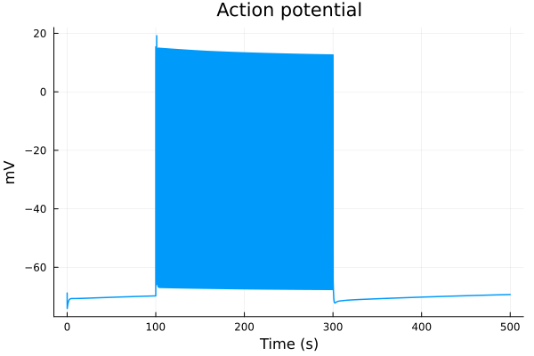
plot(sol2, idxs=(sys.t / 1000 - 299, sys.vm), title="Action potential", tspan=(299second, 300second), ylabel="mV", xlabel="Time (s)", label=false)
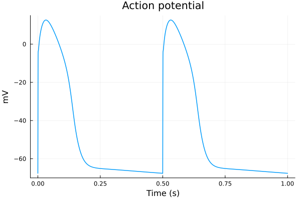
plot(sol2, idxs=(sys.t / 1000 - 299, [sys.Cai_sub_SR, sys.Cai_sub_SL, sys.Cai_mean]), tspan=(299second, 300second), title="Calcium transient", ylabel="Concentration (μM)", xlabel="Time (s)", label=["CaSSR" "CaSL" "CaAvg"])
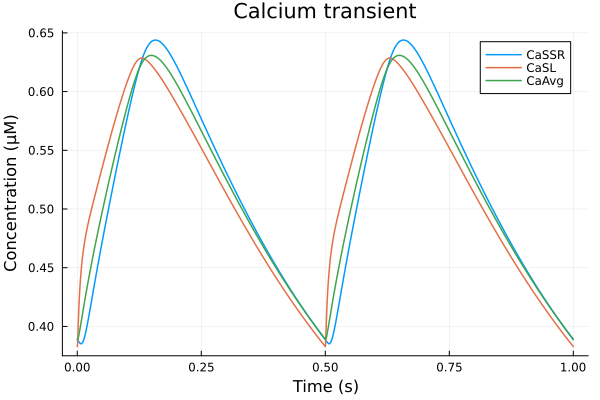
plot(sol2, idxs=(sys.t / 1000, sys.CaMKAct * 100), title="Active CaMKII", ylabel="Active CaMKII (%)", xlabel="Time (s)", label=false)
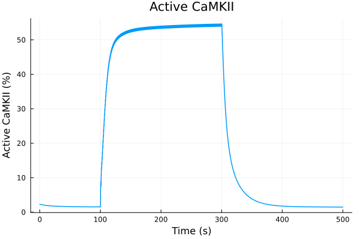
Comparing 1 and 2 Hz pacing#
idxs = (sys.t / 1000 - 299, sys.vm)
plot(sol, idxs=idxs, title="Action potential", lab="1Hz", tspan=(299second, 300second))
plot!(sol2, idxs=idxs, lab="2Hz", tspan=(299second, 300second), xlabel="Time (s)", ylabel="Voltage (mV)")
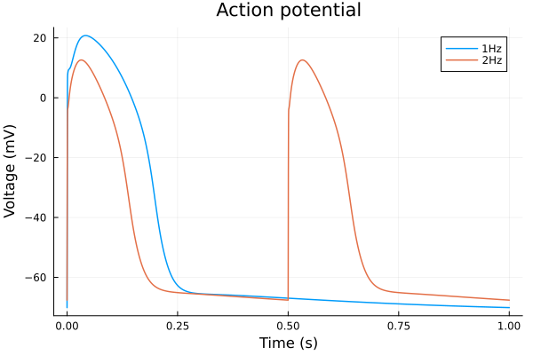
savefig("bcl-ap.pdf")
"/home/github/actions-runner-1/_work/camkii-cardiomyocyte-model/camkii-cardiomyocyte-model/.cache/docs/bcl-ap.pdf"
idxs = (sys.t / 1000 - 299, sys.Cai_mean)
plot(sol, idxs=idxs, title="Calcium transient", lab="1Hz", tspan=(299second, 300second))
plot!(sol2, idxs=idxs, lab="2Hz", tspan=(299second, 300second), xlabel="Time (s)", ylabel="Concentration (μM)")
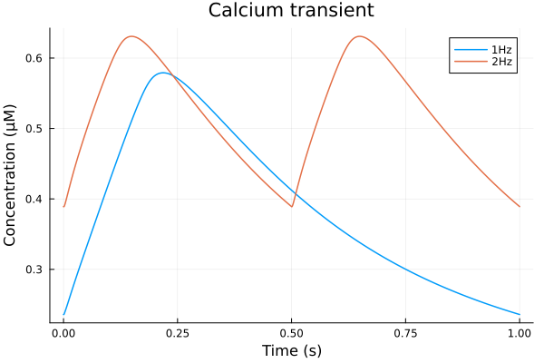
savefig("bcl-cat.pdf")
"/home/github/actions-runner-1/_work/camkii-cardiomyocyte-model/camkii-cardiomyocyte-model/.cache/docs/bcl-cat.pdf"
idxs = (sys.t / 1000, sys.CaMKAct * 100)
plot(sol, idxs=idxs, title="CaMKII", lab="1Hz")
plot!(sol2, idxs=idxs, lab="2Hz", xlabel="Time (s)", ylabel="Active fraction (%)")
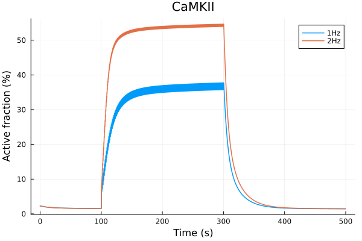
savefig("bcl-camkact.pdf")
"/home/github/actions-runner-1/_work/camkii-cardiomyocyte-model/camkii-cardiomyocyte-model/.cache/docs/bcl-camkact.pdf"
This notebook was generated using Literate.jl.